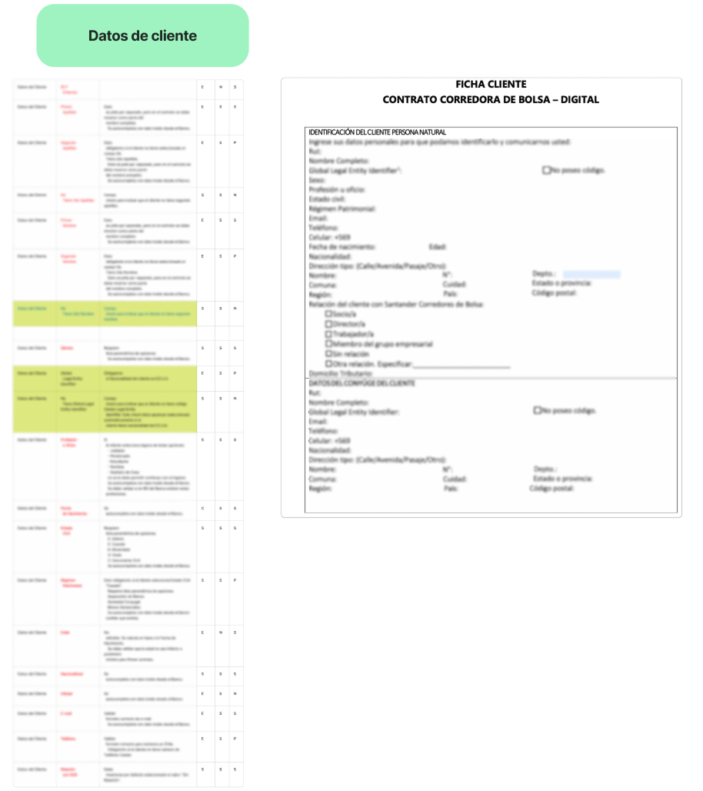
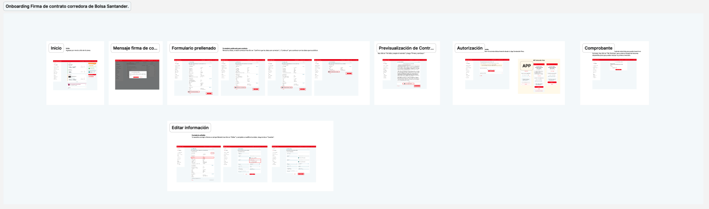
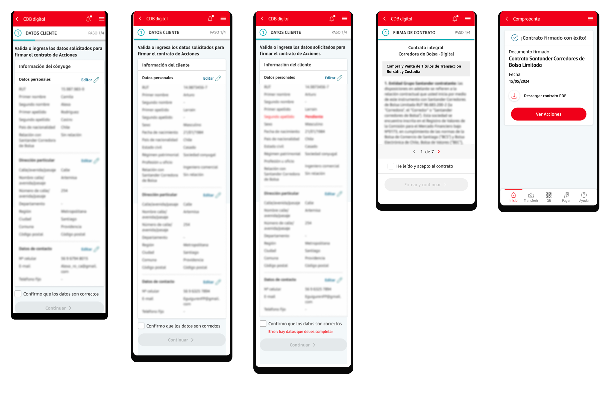
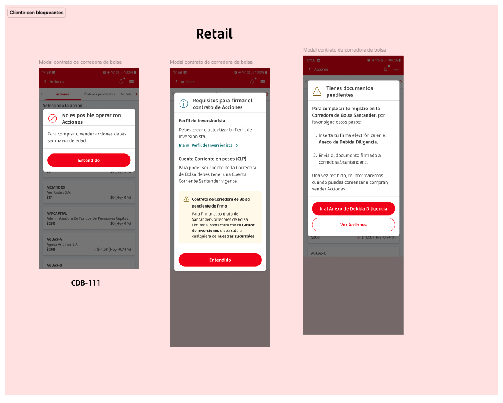
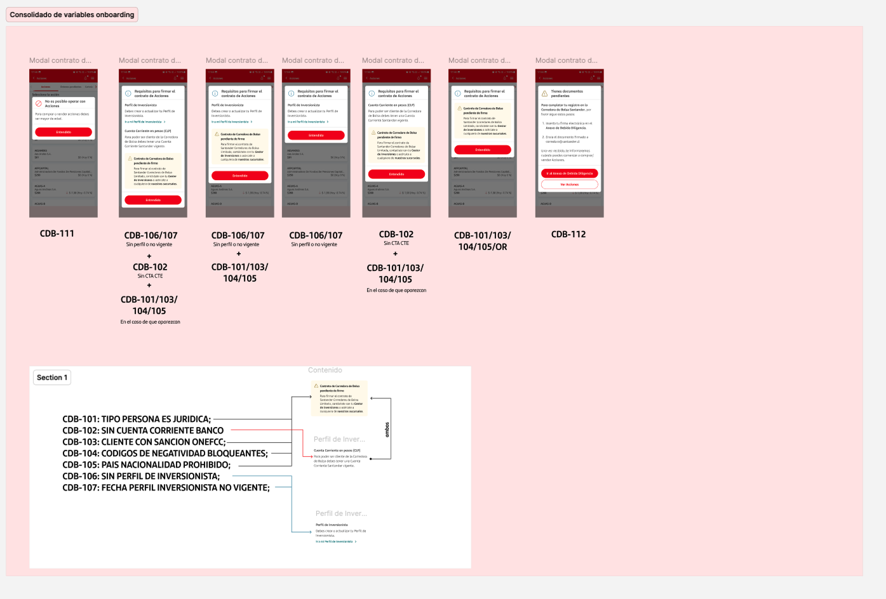
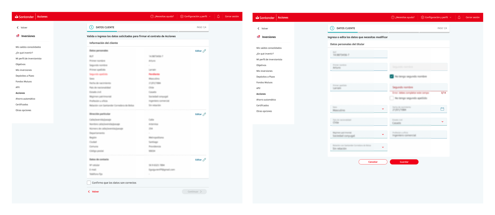

De la fricción presencial a la agilidad digital
El proceso de alta para operar en bolsa era 100% presencial: el cliente debía asistir a una sucursal, llenar un PDF manualmente y, si faltaba algún dato o existía un error de perfil, volver en otra oportunidad sin saber por qué fue bloqueado. A esto se sumó un nuevo mandato regulatorio — la Ley Fintech — que exigía acreditar un perfil de inversionista activo antes de poder operar. La convergencia de ambos factores hacía inviable escalar sin digitalizar el proceso, pero la complejidad legal y la cantidad de datos requeridos representaban un gran desafío para diseñar una experiencia digital fluida y efectiva.

Mapeo del ecosistema de servicios y Formulario de Datos del Cliente.
Compliance exigía que no se omitiera ningún dato del formato físico, lo que nos obligó a diseñar una estrategia de carga progresiva para no abrumar al usuario.
Smart Pre-fill y Reducción Cognitiva
Antes de diseñar, formamos un equipo multidisciplinario para mapear los servicios disponibles y determinar qué campos podíamos pre-poblar desde datos existentes del cliente. Compliance estableció como restricción no omitir ningún dato del formulario físico, lo que nos obligó a diseñar para la completitud sin sacrificar experiencia. La estrategia resultante fue smart pre-fill con carga progresiva: el cliente solo confirma o corrige lo necesario, seccionado para reducir carga cognitiva. El benchmark incluyó experiencias de onboarding externas y otros flujos internos del banco, para mantener consistencia con lo que el cliente ya conocía en el ecosistema Santander.

Flujo de alta de contrato.

Carga progresiva mobile.
La experiencia fue validada en dos dimensiones: con usuarios reales mediante testing local, y con el equipo legal para asegurar el cumplimiento regulatorio de cada estado comunicacional. La coordinación con compliance, legal y los equipos de tecnología fue parte integral del proceso de diseño — no una revisión al final — lo que permitió iterar sobre restricciones reales y no asumir flexibilidades que el marco legal no admitía.
Diseñando para la transparencia
Un punto crítico del flujo era el estado del perfil de inversionista: si estaba inactivo o desactualizado, el cliente quedaba bloqueado sin saberlo. Diseñamos un sistema de comunicación preventiva — previo al formulario — que informaba al cliente su situación y le indicaba el paso siguiente según su casuística. Esto implicó mapear y diseñar respuesta para cada estado posible del servicio, priorizando claridad y velocidad de respuesta para no desincentivas al cliente en un proceso de alta intención. Adicionalmente, todos los errores que el backend podía devolver fueron contemplados con mensajería específica y call-to-action de ayuda.

Aviso preventivo de Perfil Inversionista.

Gestión de errores y call-to-action de ayuda.
Consistencia Desktop
El flujo fue adaptado para el sitio privado web, manteniendo el look & feel y la estructura lógica del mobile para una experiencia coherente.

Interfaz de contrato en sitio privado web desktop.
Impacto en el Negocio
Nota sobre confidencialidad
Este proyecto está bajo NDA. La información compartida aquí se centra en el proceso de diseño y resultados estratégicos. Los datos personales han sido omitidos.
Hablemos del proceso